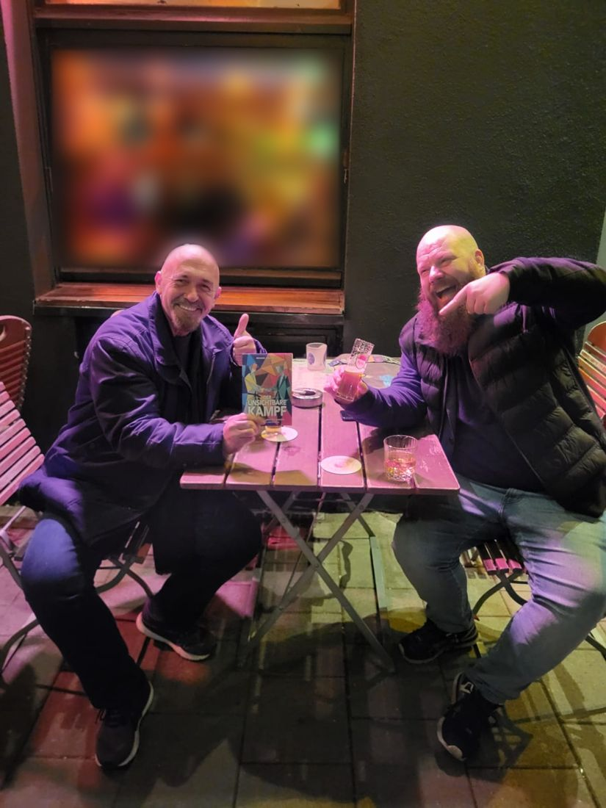

Warum dieses Buch in der Kitchen?
[Entwurf] In der Kitchen geht es sonst um Datenmodelle, Reports und Werkzeuge. Ein Buch über Kampfkunst wirkt hier auf den ersten Blick fremd. Auf den zweiten weniger: Druck vor dem Go-Live, Widerstand im Projekt, die Frage, wie präsent man im Meeting wirklich ist, und wer man im Job eigentlich sein will. Das kennen viele von uns.
[Entwurf] Micha beschreibt in seinem Buch, was auf der Matte sichtbar wird, und überträgt es auf den Kampf, den wir innen führen. Ich wollte wissen, was davon im Arbeitsalltag trägt. Darum dieses Gespräch.
[Entwurf] Danke an Micha, dass wir Cover und Klappentext hier zeigen dürfen.

Das Buch in drei Sätzen
- Der eigentliche Kampf findet nicht draußen statt, sondern in uns: in unseren Gedanken, unseren Geschichten und dem Bild, das wir von uns selbst und der Welt haben.
- Michael Thomanek nimmt, was in über vierzig Jahren Kampfkunst auf der Matte sichtbar wurde, und überträgt es auf diesen inneren Kampf.
- Es geht nicht darum, nicht mehr zu kämpfen, sondern zu verstehen, woher der Kampf kommt und wie aus innerer Reibung wieder Stimmigkeit entsteht.
Was wäre, wenn der eigentliche Kampf nicht auf der Straße stattfindet – sondern in uns?
Michael Thomanek schöpft aus über vierzig Jahren Erfahrung in der Kampfkunst. Er zeigt, was auf der Matte sichtbar wird – und überträgt es auf einen Kampf, den jeder Mensch kennt: den inneren Kampf. Widerstand, Anspannung und Reibung entstehen in unseren Gedanken, unseren Geschichten und in dem Bild, das wir von uns selbst und der Welt haben.
In der Mitte dieses Buches liegt zugleich sein philosophisches Herzstück: die Frage, von welchem Standpunkt aus wir uns selbst und die Welt überhaupt erleben. Es geht nicht darum, nicht mehr zu kämpfen, sondern zu verstehen, woher der Kampf kommt – und wie aus innerer Reibung wieder Stimmigkeit entstehen kann.
Ein Buch über Präsenz. Über Identität. Über Integration. Und über die stille Kraft, die entsteht, wenn wir aufhören, gegen uns selbst zu arbeiten.
Klappentext · Der unsichtbare Kampf, Kenamo Verlag
Über Micha
Michael Thomanek, von allen Micha genannt, schöpft aus über vierzig Jahren Erfahrung in der Kampfkunst. Mit Der unsichtbare Kampf überträgt er, was auf der Matte sichtbar wird, auf den inneren Kampf, den jeder Mensch kennt. Das Buch ist im Kenamo Verlag erschienen.
[Entwurf] Mehr Bio folgt
Platz für zwei, drei Sätze zu Micha, mit ihm abgestimmt: Kampfkunst-Stil und Weg, was er heute macht, wo man ihn findet.
Das Interview
Acht Fragen, vom Buch über die Matte bis zum Montagmorgen vor dem ersten Meeting.
Frage 1Micha, wie kam es zu dem Buch — und warum gerade jetzt?
Antwort von Micha folgt
Frage 2Vierzig Jahre auf der Matte: Was hat dich die Kampfkunst über dich selbst gelehrt, das du nirgendwo anders gelernt hättest?
Antwort von Micha folgt
Frage 3Du schreibst, Widerstand entsteht in unseren Gedanken und Geschichten. Wie merkt man im Alltag, dass man gerade gegen sich selbst kämpft?
Antwort von Micha folgt
Frage 4„Von welchem Standpunkt aus erleben wir uns und die Welt?“ — was meinst du damit, und wie kann man das im Alltag ausprobieren?
Antwort von Micha folgt
Frage 5Viele aus unserer Community arbeiten unter Druck: Deadlines, Go-Lives, Stakeholder. Was kann man von der Matte in ein schwieriges Projekt mitnehmen?
Antwort von Micha folgt
Frage 6Präsenz, Identität, Integration: Wenn jemand nur einen dieser Gedanken mitnimmt — welcher sollte es sein?
Antwort von Micha folgt
Frage 7Hast du eine kleine Übung, die man morgen früh vor dem ersten Meeting machen kann?
Antwort von Micha folgt
Frage 8Für wen hast du das Buch geschrieben — und für wen vielleicht gerade nicht?
Antwort von Micha folgt
Was ich für mich mitnehme
[Entwurf] Fazit von Michael Tenner folgt
Drei bis fünf Sätze nach dem Gespräch. Mögliche Anker für die Brücke in den Datenalltag:
- Druck im Projekt: Deadline, Go-Live, Eskalation
- Widerstand: gegen Anforderungen, Stakeholder, das eigene Datenmodell
- Präsenz im Team: im Meeting wirklich da sein
- Identität und Karriere: wer man im Job sein will